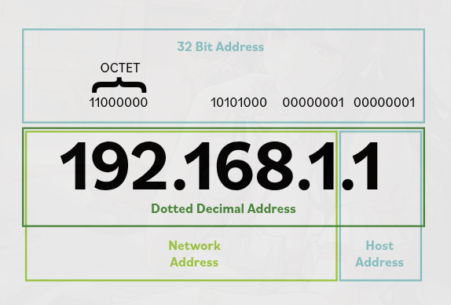

41. Internet Protocol (IPv4 and IPv6)
IP is used to give devices logical addresses (addresses used by the network to identify devices) so they can communicate across networks. The two main versions are IPv4 (older IP version) and IPv6 (newer IP version).
IPv4
IPv4 uses a 32-bit address (an address made of 32 binary digits). It is written as four octets (four number sections) separated by dots, such as 192.168.0.1.
Each octet ranges from 0 to 255. An IPv4 address is divided into a network portion (the part that identifies the network) and a host portion (the part that identifies the specific device on that network).
Networks are often split into subnets (smaller parts of a network), and a subnet mask (a value that shows which part of the IP address is network and which part is host) is used to show which part of the address identifies the subnet. A common example is 255.255.255.0.

Because IPv4 has a limited number of addresses, private addressing (addresses used only inside local/internal networks) is used inside internal networks.

These private addresses are used inside local networks and are not meant to be routed (sent across other networks, especially the internet) directly on the internet.
The 127.x.x.x range is reserved for loopback (the device talking to itself). The most common loopback address is 127.0.0.1, which refers to the local machine.
People mostly say that "There is no place like 127.0.0.1", it points to yourself or in simple words it mean home.
IPv6
IPv6 was created to solve IPv4 address shortage and improve networking features. It uses a 128-bit address (a much longer address made of 128 binary digits), which provides a much larger address space (the total number of possible addresses).
IPv6 addresses are written as eight groups of four hexadecimal digits (numbers using 0–9 and letters a–f) separated by colons. Example:
2001:0db8:0000:0000:0000:ffff:0000:0001
IPv6 addresses can be shortened by:
- removing leading zeros (zeros at the beginning of a section)
- replacing one longest continuous set of zero groups with
::
So the example above can become:
2001:db8::ffff:0:1
IPv6 improvements
- Much larger address space (more possible device addresses)
- Better support for secure communication (safer data transfer between devices)
- Better quality of service or QoS (better control of which traffic gets priority)
Special IPv6 addresses
::1= loopback address (device talking to itself)2001:db8::/32= reserved for documentation/examples (used in books and teaching, not normal real use)fc00::/7= private/internal use range (used inside private networks)
Main Idea
IPv4 and IPv6 are the two main IP versions. IPv4 uses 32-bit addresses and has limited space, while IPv6 uses 128-bit addresses and provides a much larger, more modern addressing system.